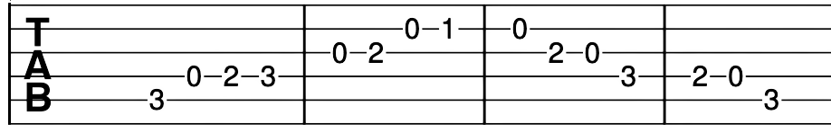
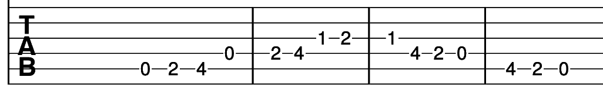
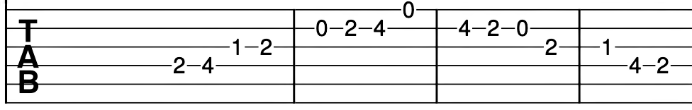
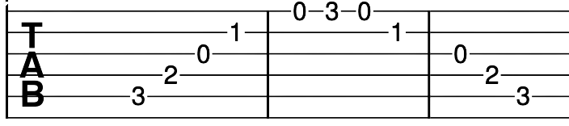
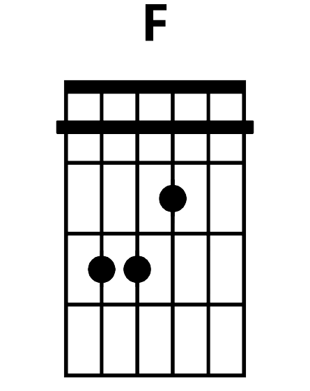
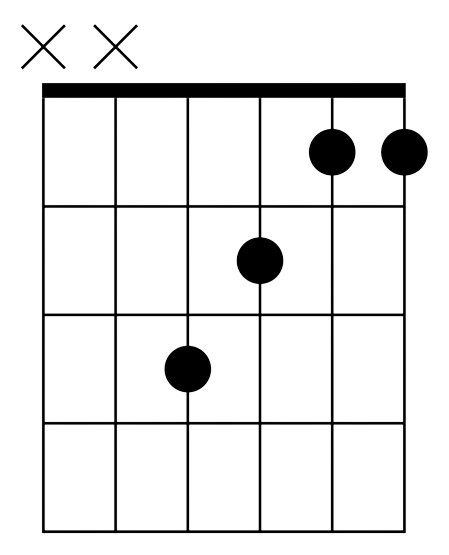

Warm up by playing your favourite songs from the songbook tab above. Once you feel warmed up and happy with your playing, you can continue to the tabs below.


The tabs below are D major and E major scales respectively. Notice the similar patterns with the two above scales. Each note has the same spacing as the other notes.

Here we have an arpeggio. This is in the key of C major.

This chord is an F major chord.

What is an arpeggio? An arpeggio involves playing the notes of a chord individually
as opposed to all at once. In the case of the above arpeggio, you are playing C E G ascending and then descending
once you reach the high G and go back to the low C. Play a C chord and listen to the notes. Now play a C
arpeggio. Can you hear the similar notes? This is because an arpeggio is a "broken chord".
What is the line in the F chord? The line denotes a bar chord. Playing a bar chord
means holding a finger across the fretboard to hold down more than one string with one finger. This allows you to
play a multitude more chords. You are otherwise making the shape of an E major chord with your middle, ring and
pinky fingers but shifted up by a fret.
How can I improve my playing chords like F major? Plenty of pain and practise. Bar
chords do get easier over time. Beginners often struggle with holding their fingers flat to a fretboard for any
length of time. With regular playing, you should steadily increase the strength in your fingers. Don't worry if
you struggle with this chord at first. If you would like to play a song with the F chord but struggle with bar
chords then you might like to try the chord below as a substitute.
